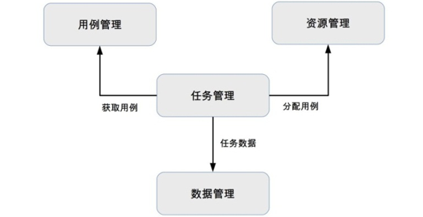

43-互联网架构模板：“平台”技术
当业务规模不大时，系统复杂度不高时，运维、测试、数据分析、管理等由各自的系统或团队完成。随着业务规模越来越大，系统复杂度越来越高，子系统数量越来越多时，如果继续使用各自为政的方式来实现这些功能的话，重复工作会非常多。因此，自然会想到把这些支撑功能作成统一的平台。
运维平台
运维平台的核心的职责分为4块：配置、部署、监控、应急，每个职责对应生命周期的一个阶段：
- 配置：主要负责资源的管理。例如：机器管理、IP地址管理、虚拟机管理等。
- 部署：主要负责将系统部署到线上。例如：包管理、灰度发布、回滚等。
- 监控：主要负责收集系统上线后运行的相关数据并进行监控，以便发现问题。
- 应急：主要负责系统出现故障后的处理。例如：停止程序、下线故障机器、切换IP等。
运维平台的核心要素是四化：标准化、平台化、自动化、可视化。
标准化
需要制定运维标准，规范配置管理、部署流程、监控指标、应急能力等，各系统按照运维标准来实现，避免不同系统不同的处理方式。标准化是运维平台的基础：没有标准化就没有运维平台。
如果某个系统就是无法改造自己来满足运维平台怎么办？常见的方式是不改变系统，而是通过中间方来适配运维平台。
平台化
传统的手工运维方式需要投入大量人力，效率低，容易出错，因此在运维平台标准化的基础上，将运维的相关操作都集成到运维平台中，通过运维平台来完成运维工作。
运维平台的好处：
- 可以将运维标准固化到平台中，无须运维人员死背运维规则。
- 运维平台提供简单方便的操作，相比之下人工操作低效且容易出错。
- 运维平台可以复用，一套运维平台可以可以支撑成百上千的系统。
自动化
传统手工运维方式效率低下的一个主要原因是要执行大量重复的操作，运维平台可以将这些重复的操作固化下来，由系统完成。
可视化
运维有许多数据，如果全部通过人工去查询数据再来判断，则效率很低。尤其在故障应急时，时间就是生命，处理问题都是争分夺秒，能够减少1分钟的时间就可以挽回很多损失，可视化的目的就是为了提升数据查看效率。
可视化相比简单的数据罗列，有以下的优点：
- 能够直观的看到数据的相关属性。
- 能够将数据的含义展示出来。
- 能够将关联的数据整合一起展示。
测试平台
测试平台的核心职责是测试，包括单元测试、集成测试、接口测试、性能测试等，都可以在测试平台来完成。
测试平台的核心目的是提升测试效率，从而提升产品质量，其设计关键是自动化。通过测试平台提供的自动化能力，测试用例可以自动重复的执行，无须人工执行，大大提升测试效率。
测试平台的基本框架：

用例管理
测试自动化的主要手段是通过脚本或代码来进行测试，例如单元测试用例用代码、接口测试用例可以用python来写，可靠性测试用例可以用shell来写。为了能够重复利用这些测试用例，测试平台需要把这些用例管理起来，管理的维度包括业务、系统、测试类型、用例代码。
资源管理
测试用例需要放在具体的运行环境中才能执行，运行环境包括硬件(服务器、手机、平板等)、软件(操作系统、数据库、Java虚拟机等)、业务系统(被测试系统)。
除了性能测试，一般自动化测试对性能要求不高，所以为了提升资源利用率，大部分的测试平台都会使用虚拟化技术，例如Docker。
任务管理
任务管理的主要职责 将测试用例分配到具体的资源上执行，跟踪任务的执行情况。任务管理是测试平台的核心，它将测试平台的各个部分串联起来从而完成自动化测试。
数据管理
测试任务执行完成后，需要记录各种相关数据(例如：执行时间、执行结果、用例执行期间的CPU、内存占用情况等)，这此数据的作用有：
- 展现当前用例的执行情况。
- 作为历史数据，方便后续的测试与历史数据作对比，从而发现明显的变化趋势。例如：某个版本的单元测试覆盖率从90%下降到70%。
- 作为大数据的一部分，可以基于测试的任务数据进行一些数据挖掘。
数据平台
数据平台的核心职责主要包括以下三个部分：数据管理、数据分析、数据应用。数据平台的架构如下图：

数据管理
数据管理包括数据采集、数据存储、数据访问和数据安全四个核心职责，是数据平台的基本功能。
- 数据采集：从业务系统搜集各类数据。例如，日志、用户行为、业务数据等，将这些数据传送到数据平台。
- 数据存储：将从业务系统采集到数据存储到数据平台，用于后续数据分析。
- 数据访问：负责对外提供各种协议用于读写数据，例如，SQL、Hive、Key-Value等协议。
- 数据安全：通常情况下数据平台是多个业务共享的，部分敏感数据要需要加以保护，防止被其它业务读取甚至修改，因此需要设计数据安全策略来保护数据。
数据分析
数据分析包括数据统计、数据挖掘、机器学习、深度学习等。
- 数据统计：根据原始数据统计相关的总览数据，例如，PV、UV等。
- 数据挖掘：对数据进行分析从而发现一些隐含的规律、现象和问题等。
- 机器学习、深度学习：属于数据挖掘的一种具体实现方式。
数据应用
包括在线业务、离线业务，例如：推荐、广告属于在线业务，报表、欺诈检测、异常检测属于离线业务。
数据应用能够发挥价值的前提是需要有“大数据”，只有当数据达到一定的规模后，基于数据进行分析和挖掘才能发现有价值的规律、现象和问题等。如果数据没有达到一定的规模，通常情况下做好数据统计即可以，特别是初创企业，无须一开始就搭建数据平台。
管理平台
管理平台的核心职责是权限管理，无论是业务系统、中间系统、还是平台系统，都需要进行管理。如果每个系统都自己实现权限管理，效率太低、重复工作太多，因此需要统一的平台来管理所有的系统的权限。
权限管理主要分为二个部分：身份认证、权限控制。
身份认证
确认当前的操作人员身份，防止非法人员进入系统。
权限控制
根据操作人员的身份确认操作权限，防止未经授权的人员进行操作。